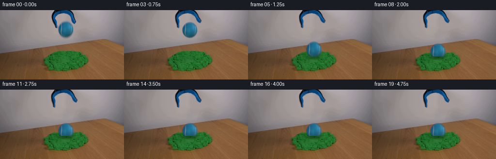
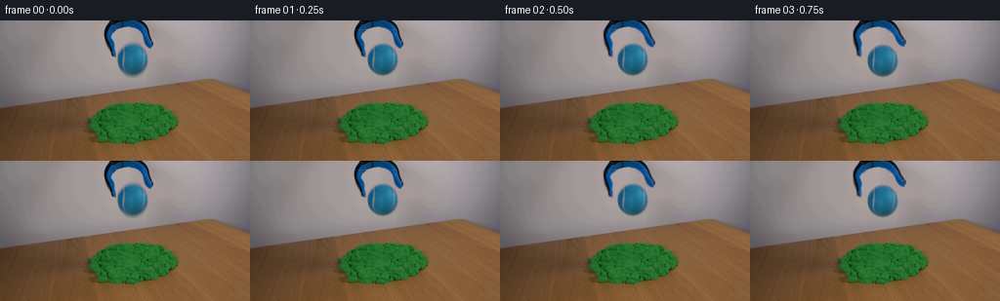
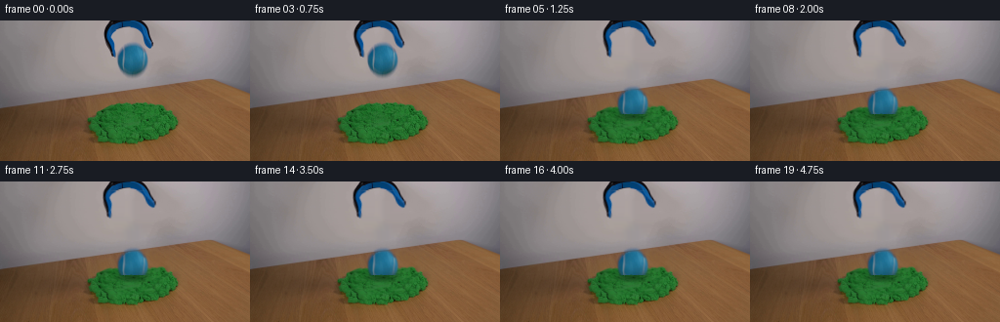
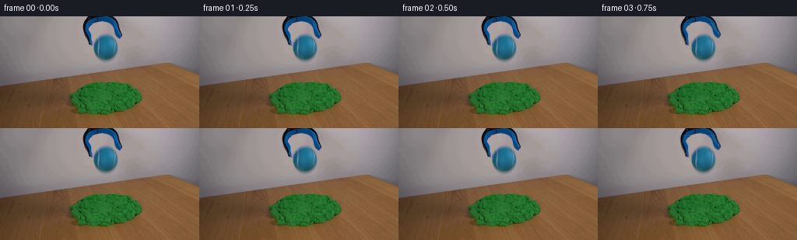

CODING AGENTS AS PIXEL WORLD MODELS
traex/GPT-6.1-Sol · 0016
点击播放 · 原生 RGB 像素
逐轮保存的候选
回放视频、检查图与代码变化。
每份候选均可单独播放。实际图片检查记录在下方工具轨迹中。
候选 01播放与检查图
点击播放 · 原生 RGB 像素


展开代码变化
--- 上一保存版本
+++ 本次保存版本
@@ -0,0 +1,159 @@
+from pathlib import Path
+import math
+import numpy as np
+from PIL import Image
+import cv2
+from scipy.ndimage import gaussian_filter
+import artifact_io
+
+ROOT=Path(__file__).resolve().parent
+H,W=144,256
+Y,X=np.mgrid[:H,:W].astype(np.float32)
+original=np.asarray(Image.open(ROOT/'first_frame.png').convert('RGB'),dtype=np.uint8)
+F=original.astype(np.float32)
+CX,CY=135.5,39.5
+RX,RY=15.7,16.25
+rad=np.sqrt(((X-CX)/RX)**2+((Y-CY)/RY)**2)
+# The clean plate and all moving surface detail come from the supplied photograph.
+r,g,b=F.transpose(2,0,1)
+tool_support=((b-r>12)|(r<142))&(Y<39)&(X>103)&(X<160)&(rad>1.085)
+tool_support[:8,104:158]=((b-r>12)|(r<142))[:8,104:158]
+clean_mask=tool_support | ((rad<1.20)&(Y>19))
+clean_mask=cv2.dilate(clean_mask.astype(np.uint8),np.ones((3,3),np.uint8))
+clean=cv2.inpaint(original,clean_mask*255,6,cv2.INPAINT_NS).astype(np.float32)
+# A very light lowpass removes the interpolation pattern only inside the cleared subjects.
+sm=gaussian_filter(clean,(.65,.65,0))
+clean=np.where(clean_mask[...,None]>0,sm,clean)
+
+ball_alpha=np.clip((1.045-rad)/.075,0,1)
+# Preserve the photographic optical edge, rather than transporting a grey fringe.
+pred_red=31+20*np.clip((X-CX)/RX,0,1)+5*np.clip((CY-Y)/RY,0,1)
+est=np.clip((clean[...,0]-F[...,0])/(clean[...,0]-pred_red+1e-4),0,1)
+ball_alpha=np.where(rad<.88,1,ball_alpha*est)
+ball_alpha=np.where(rad>1.06,0,ball_alpha).astype(np.float32)
+ball_color=np.clip((F-clean*(1-ball_alpha[...,None]))/np.maximum(ball_alpha[...,None],.035),0,255)
+ball_premul=ball_color*ball_alpha[...,None]
+
+tool_alpha=gaussian_filter(tool_support.astype(np.float32),.45)
+tool_alpha=np.clip(tool_alpha*1.12,0,1)
+tool_alpha=np.where(rad<1.045,0,tool_alpha)
+tool_color=np.clip((F-clean*(1-tool_alpha[...,None]))/np.maximum(tool_alpha[...,None],.045),0,255)
+# A fixed head connects the two jaws; the lower tines open about their upper hinges.
+head_alpha=tool_alpha*np.clip((11-Y)/3,0,1)
+left_alpha=tool_alpha*(X<130)*np.clip((Y-7)/3,0,1)
+right_alpha=tool_alpha*(X>=130)*np.clip((Y-7)/3,0,1)
+
+rng=np.random.default_rng(19)
+rough=gaussian_filter(rng.normal(0,1,(H,W)).astype(np.float32),.5)
+rough/=rough.std()
+sand=((g>r*1.18)&(g>b*1.16)&(Y>77)).astype(np.float32)
+sand_soft=gaussian_filter(sand,.45)
+
+RELEASE=.65
+GRAV=250.
+CONTACT_Y=77.5
+CONTACT=RELEASE+math.sqrt(2*(CONTACT_Y-CY)/GRAV)
+
+def remap(a,mx,my):
+ return cv2.remap(a,mx.astype(np.float32),my.astype(np.float32),cv2.INTER_LINEAR,borderMode=cv2.BORDER_CONSTANT)
+
+def over(base,col,alpha):
+ return base*(1-alpha[...,None])+col*alpha[...,None]
+
+def tool_on(base,openness):
+ base=over(base,tool_color,head_alpha)
+ for alpha,px,py,angle in [(left_alpha,116.,8.,.175*openness),(right_alpha,145.,8.,-.19*openness)]:
+ co,si=np.cos(angle),np.sin(angle)
+ mx=px+co*(X-px)+si*(Y-py)
+ my=py-si*(X-px)+co*(Y-py)
+ a=remap(alpha,mx,my)
+ pc=remap(tool_color*alpha[...,None],mx,my)
+ base=base*(1-a[...,None])+pc
+ return base
+
+def ball_position(t):
+ if t<RELEASE:return CY
+ if t<CONTACT:return CY+.5*GRAV*(t-RELEASE)**2
+ s=t-CONTACT
+ return CONTACT_Y+7.8*(1-np.exp(-s/.068))-.45*np.exp(-s/.24)*np.sin(s*17)
+
+def background(t):
+ s=max(0,t-CONTACT)
+ progress=0 if t<CONTACT else 1-np.exp(-s/.07)
+ # Cohesive grains are pushed down and sideways; the pile's base remains fixed.
+ influence=np.exp(-((X-CX)/23)**2-((Y-89)/13)**2)
+ dy=6.5*progress*influence
+ dx=3.0*progress*((X-CX)/21)*np.exp(-((X-CX)/30)**2-((Y-95)/15)**2)
+ mapped=remap(clean,X-dx,Y-dy)
+ region=np.clip(gaussian_filter(((X>99)&(X<174)&(Y>77)&(Y<117)).astype(np.float32),1.0),0,1)*progress
+ base=clean*(1-region[...,None])+mapped*region[...,None]
+ green=((base[...,1]>base[...,0]*1.17)&(base[...,1]>base[...,2]*1.12)).astype(np.float32)
+ green=gaussian_filter(green,.5)
+ # Shaded elliptical impression on the upper surface, not a hole through the table.
+ bowl=np.exp(-(((X-CX)/19)**2+((Y-95)/7.2)**2)*1.4)
+ base*=1-(.27*progress*bowl*green)[...,None]
+ # Small raised lip retains the real sand texture and catches the light.
+ er=np.sqrt(((X-CX)/23)**2+((Y-95)/9)**2)
+ rim=np.exp(-((er-1)/.13)**2)*progress*green
+ base+=rim[...,None]*np.array([2.2,5.5,2.0],np.float32)
+ # Grounded shadow develops naturally as the falling ball approaches the surface.
+ by=ball_position(t)
+ gap=max(0,CONTACT_Y-by)
+ strength=.21/(1+gap/15)
+ sh=np.exp(-(((X-(CX-2))/(16+gap*.13))**2+((Y-99)/(3.8+gap*.04))**2)*1.5)
+ base*=1-(strength*sh*green)[...,None]
+ # A few short pressure fissures, visible only beside the seated sphere.
+ for x0,y0,x1,y1 in [(116,94,110,97),(154,94,161,95),(120,101,116,106),(151,102,156,106)]:
+ vx,vy=x1-x0,y1-y0
+ u=np.clip(((X-x0)*vx+(Y-y0)*vy)/(vx*vx+vy*vy),0,1)
+ d2=(X-x0-u*vx)**2+(Y-y0-u*vy)**2
+ line=np.exp(-d2/.30)*(.7+.3*np.sin(u*19))*green*progress
+ base*=1-(.15*line)[...,None]
+ return base,progress,green
+
+
+def render(t):
+ if t<=.125:return F.copy()
+ base,progress,green=background(t)
+ opened=np.clip((t-.20)/.48,0,1)
+ opened=opened*opened*(3-2*opened)
+ base=tool_on(base,opened)
+ # Integrate a short exposure to give the free fall subtle, directional motion blur.
+ exposure=.020 if RELEASE<t<CONTACT else .008
+ alpha=np.zeros((H,W),np.float32)
+ premul=np.zeros((H,W,3),np.float32)
+ for dt in np.linspace(-exposure/2,exposure/2,5):
+ cy=ball_position(t+dt)
+ cx=CX+.25*progress
+ mx=X-(cx-CX)
+ my=Y-(cy-CY)
+ alpha+=remap(ball_alpha,mx,my)/5
+ premul+=remap(ball_premul,mx,my)/5
+ # The front edge of the soft sand hides the lowest portion of the ball as it embeds.
+ if progress>0:
+ lip=95.25+1.7*((X-CX)/18)**2+.28*rough
+ occlusion=np.clip((Y-lip+.45)/.9,0,1)*progress*green
+ alpha*=1-occlusion
+ premul*=1-occlusion[...,None]
+ base=base*(1-alpha[...,None])+premul
+ # Only a few cohesive crumbs slide a short distance during the impact.
+ if t>=CONTACT:
+ s=t-CONTACT
+ for k in range(12):
+ side=-1 if k%2 else 1
+ ux=side*(17+(k%4)*1.4)
+ x=CX+ux+side*min(s/.25,1)*(1.1+(k%3)*.5)
+ y=95+(k%5)*2.0 + min(s/.25,1)*1.2
+ if s<.26:y-=2.6*np.sin(np.pi*s/.26)*(1+(k%2)*.2)
+ rr=((X-x)/(.45+(k%3)*.12))**2+((Y-y)/.48)**2
+ a=np.clip((1.25-rr)/.8,0,1)*.8*progress
+ color=np.array([30+(k%4)*3,96+(k%5)*5,35+(k%3)*4],np.float32)
+ base=over(base,color,a)
+ return np.clip(np.rint(base),0,255).astype(np.uint8)
+
+if __name__=='__main__':
+ frames=np.stack([render(i/4) for i in range(20)]).astype(np.uint8)
+ frames[0]=original
+ artifact_io.save(frames,ROOT)
+ np.save(ROOT/'.tmp'/'clean_plate.npy',clean.astype(np.uint8))
+ Image.fromarray(clean.astype(np.uint8)).save(ROOT/'.tmp'/'clean_plate.png')
候选 02播放与检查图
点击播放 · 原生 RGB 像素


展开代码变化
--- 上一保存版本
+++ 本次保存版本
@@ -25,12 +25,15 @@
sm=gaussian_filter(clean,(.65,.65,0))
clean=np.where(clean_mask[...,None]>0,sm,clean)
-ball_alpha=np.clip((1.045-rad)/.075,0,1)
# Preserve the photographic optical edge, rather than transporting a grey fringe.
pred_red=31+20*np.clip((X-CX)/RX,0,1)+5*np.clip((CY-Y)/RY,0,1)
est=np.clip((clean[...,0]-F[...,0])/(clean[...,0]-pred_red+1e-4),0,1)
-ball_alpha=np.where(rad<.88,1,ball_alpha*est)
-ball_alpha=np.where(rad>1.06,0,ball_alpha).astype(np.float32)
+minimum_opacity=np.maximum(np.max((clean-F)/np.maximum(clean,1),axis=2),
+ np.max((F-clean)/np.maximum(255-clean,1),axis=2))
+ball_alpha=np.maximum(est,minimum_opacity)
+ball_alpha=np.where(rad<.88,1,ball_alpha)
+ball_support=(rad<1.28)&(Y>=21)&(X>=119)&(X<=154)&(~tool_support)
+ball_alpha=np.where(ball_support,ball_alpha,0).astype(np.float32)
ball_color=np.clip((F-clean*(1-ball_alpha[...,None]))/np.maximum(ball_alpha[...,None],.035),0,255)
ball_premul=ball_color*ball_alpha[...,None]
@@ -49,9 +52,9 @@
sand=((g>r*1.18)&(g>b*1.16)&(Y>77)).astype(np.float32)
sand_soft=gaussian_filter(sand,.45)
-RELEASE=.65
-GRAV=250.
-CONTACT_Y=77.5
+RELEASE=.88
+GRAV=2500.
+CONTACT_Y=70.5
CONTACT=RELEASE+math.sqrt(2*(CONTACT_Y-CY)/GRAV)
def remap(a,mx,my):
@@ -75,7 +78,7 @@
if t<RELEASE:return CY
if t<CONTACT:return CY+.5*GRAV*(t-RELEASE)**2
s=t-CONTACT
- return CONTACT_Y+7.8*(1-np.exp(-s/.068))-.45*np.exp(-s/.24)*np.sin(s*17)
+ return CONTACT_Y+14.8*(1-np.exp(-s/.068))-.45*np.exp(-s/.24)*np.sin(s*17)
def background(t):
s=max(0,t-CONTACT)
@@ -113,9 +116,9 @@
def render(t):
- if t<=.125:return F.copy()
+ if t<=.5:return F.copy()
base,progress,green=background(t)
- opened=np.clip((t-.20)/.48,0,1)
+ opened=np.clip((t-.60)/.36,0,1)
opened=opened*opened*(3-2*opened)
base=tool_on(base,opened)
# Integrate a short exposure to give the free fall subtle, directional motion blur.
可观测工具轨迹
实际执行的命令与返回图片。
命令 1exit 0
/bin/bash -lc "ls -la && cat prompt.txt && printf '\\n--- RULES ---\\n' && cat GENERATION_RULES.md"
命令 2exit 0
/bin/bash -lc "cat artifact_io.py && python - <<'PY'
from PIL import Image
import numpy as np
im=np.asarray(Image.open('first_frame.png').convert('RGB'))
print(im.shape)
# ascii dominant labels on 2x2 sampling
for y in range(0,144,3):
s=''
for x in range(0,256,3):
r,g,b=im[y:y+3,x:x+3].mean((0,1))
if g>r*1.18 and g>b*1.12: c='G'
elif b>r*1.22 and b>g*1.08:c='B'
elif max(r,g,b)<50:c='#'
elif max(r,g,b)<90:c='d'
elif r>g*1.15 and r>b*1.3:c='w'
elif max(r,g,b)>190:c='.'
else:c='-'
s+=c
print(f'{y:3} '+s)
PY"命令 3exit 0
/bin/bash -lc "python - <<'PY'
from PIL import Image
import numpy as np
from collections import Counter
im=np.array(Image.open('first_frame.png').convert('RGB'))
for y in range(0,58):
s=''
for x in range(103,158):
r,g,b=map(int,im[y,x]);
if b>r*1.2 and b>g*1.07:
c='O' if g>85 else 'b' if g>55 else 'u' if b>75 else '#'
elif max(r,g,b)<50:c='#'
elif max(r,g,b)<85:c='d'
else:c='.'
s+=c
print(f'{y:02} '+s)
print('Samples')
for y in [0,4,10,20,25,28,32,36,40,45,50,54,58]:
print(y,[(x,im[y,x].tolist()) for x in [110,112,115,120,123,128,132,136,140,144,148,151,154]])
PY"命令 4exit 0
/bin/bash -lc "python - <<'PY'
import numpy as np
from PIL import Image
im=np.array(Image.open('first_frame.png').convert('RGB'))
for y in range(79,129,2):
s=''
for x in range(78,185,2):
r,g,b=map(int,im[y,x]);
if g>r*1.17 and g>b*1.12:
c='@' if g<70 else 'g' if g<105 else 'G' if g<135 else '+' if g<165 else '*'
else:c='.'
s+=c
print(y,s)
# color means ball crop and greens
for y in [84,87,90,95,100,105,110,115,120,123]:
print(y,[(x,im[y,x].tolist()) for x in [90,100,110,120,130,136,140,150,160,170]])
import importlib.util
for s in ['cv2','scipy']: print(s, bool(importlib.util.find_spec(s)))
PY"命令 5exit 0
/bin/bash -lc "python - <<'PY'
import numpy as np
from PIL import Image
im=np.array(Image.open('first_frame.png').convert('RGB')).astype(float)
r,g,b=im.transpose(2,0,1)
for y in range(20,60):
xs=np.where((b[y]-r[y]>23)&(g[y]-r[y]>20)&(np.arange(256)>117)&(np.arange(256)<152))[0]
print(y,(min(xs),max(xs)) if len(xs) else '-')
PY"命令 6exit 0
/bin/bash -lc "python - <<'PY'
from PIL import Image
import numpy as np
im=np.array(Image.open('first_frame.png'))
for y in range(21,59):
s=''
for x in range(118,156):
r,g,b=map(int,im[y,x]);
c='.' if r>150 else ',' if r>125 else ':' if r>100 else '*' if r>75 else 'O' if r>50 else '@' if r>25 else '#'
s+=c
print(f'{y:2}',s)
PY"命令 7exit 0
/bin/bash -lc "python - <<'PY'
from PIL import Image
import numpy as np
im=np.asarray(Image.open('first_frame.png')).astype(float)
for y in [0,10,20,30,40,50,60,64]:
print(y, [(x,im[y,x].astype(int).tolist()) for x in [90,98,102,106,158,164,168,174]])
PY"命令 8exit 0
/bin/bash -lc "cat > generate.py <<'PY'
from pathlib import Path
import math
import numpy as np
from PIL import Image
import cv2
from scipy.ndimage import gaussian_filter
import artifact_io
ROOT=Path(__file__).resolve().parent
H,W=144,256
Y,X=np.mgrid[:H,:W].astype(np.float32)
original=np.asarray(Image.open(ROOT/'first_frame.png').convert('RGB'),dtype=np.uint8)
F=original.astype(np.float32)
CX,CY=135.5,39.5
RX,RY=15.7,16.25
rad=np.sqrt(((X-CX)/RX)**2+((Y-CY)/RY)**2)
# The clean plate and all moving surface detail come from the supplied photograph.
r,g,b=F.transpose(2,0,1)
tool_support=((b-r>12)|(r<142))&(Y<39)&(X>103)&(X<160)&(rad>1.085)
tool_support[:8,104:158]=((b-r>12)|(r<142))[:8,104:158]
clean_mask=tool_support | ((rad<1.20)&(Y>19))
clean_mask=cv2.dilate(clean_mask.astype(np.uint8),np.ones((3,3),np.uint8))
clean=cv2.inpaint(original,clean_mask*255,6,cv2.INPAINT_NS).astype(np.float32)
# A very light lowpass removes the interpolation pattern only inside the cleared subjects.
sm=gaussian_filter(clean,(.65,.65,0))
clean=np.where(clean_mask[...,None]>0,sm,clean)
ball_alpha=np.clip((1.045-rad)/.075,0,1)
# Preserve the photographic optical edge, rather than transporting a grey fringe.
pred_red=31+20*np.clip((X-CX)/RX,0,1)+5*np.clip((CY-Y)/RY,0,1)
est=np.clip((clean[...,0]-F[...,0])/(clean[...,0]-pred_red+1e-4),0,1)
ball_alpha=np.where(rad<.88,1,ball_alpha*est)
ball_alpha=np.where(rad>1.06,0,ball_alpha).astype(np.float32)
ball_color=np.clip((F-clean*(1-ball_alpha[...,None]))/np.maximum(ball_alpha[...,None],.035),0,255)
ball_premul=ball_color*ball_alpha[...,None]
tool_alpha=gaussian_filter(tool_support.astype(np.float32),.45)
tool_alpha=np.clip(tool_alpha*1.12,0,1)
tool_alpha=np.where(rad<1.045,0,tool_alpha)
tool_color=np.clip((F-clean*(1-tool_alpha[...,None]))/np.maximum(tool_alpha[...,None],.045),0,255)
# A fixed head connects the two jaws; the lower tines open about their upper hinges.
head_alpha=tool_alpha*np.clip((11-Y)/3,0,1)
left_alpha=tool_alpha*(X<130)*np.clip((Y-7)/3,0,1)
right_alpha=tool_alpha*(X>=130)*np.clip((Y-7)/3,0,1)
rng=np.random.default_rng(19)
rough=gaussian_filter(rng.normal(0,1,(H,W)).astype(np.float32),.5)
rough/=rough.std()
sand=((g>r*1.18)&(g>b*1.16)&(Y>77)).astype(np.float32)
sand_soft=gaussian_filter(sand,.45)
RELEASE=.65
GRAV=250.
CONTACT_Y=77.5
CONTACT=RELEASE+math.sqrt(2*(CONTACT_Y-CY)/GRAV)
def remap(a,mx,my):
return cv2.remap(a,mx.astype(np.float32),my.astype(np.float32),cv2.INTER_LINEAR,borderMode=cv2.BORDER_CONSTANT)
def over(base,col,alpha):
return base*(1-alpha[...,None])+col*alpha[...,None]
def tool_on(base,openness):
base=over(base,tool_color,head_alpha)
for alpha,px,py,angle in [(left_alpha,116.,8.,.175*openness),(right_alpha,145.,8.,-.19*openness)]:
co,si=np.cos(angle),np.sin(angle)
mx=px+co*(X-px)+si*(Y-py)
my=py-si*(X-px)+co*(Y-py)
a=remap(alpha,mx,my)
pc=remap(tool_color*alpha[...,None],mx,my)
base=base*(1-a[...,None])+pc
return base
def ball_position(t):
if t<RELEASE:return CY
if t<CONTACT:return CY+.5*GRAV*(t-RELEASE)**2
s=t-CONTACT
return CONTACT_Y+7.8*(1-np.exp(-s/.068))-.45*np.exp(-s/.24)*np.sin(s*17)
def background(t):
s=max(0,t-CONTACT)
progress=0 if t<CONTACT else 1-np.exp(-s/.07)
# Cohesive grains are pushed down and sideways; the pile's base remains fixed.
influence=np.exp(-((X-CX)/23)**2-((Y-89)/13)**2)
dy=6.5*progress*influence
dx=3.0*progress*((X-CX)/21)*np.exp(-((X-CX)/30)**2-((Y-95)/15)**2)
mapped=remap(clean,X-dx,Y-dy)
region=np.clip(gaussian_filter(((X>99)&(X<174)&(Y>77)&(Y<117)).astype(np.float32),1.0),0,1)*progress
base=clean*(1-region[...,None])+mapped*region[...,None]
green=((base[...,1]>base[...,0]*1.17)&(base[...,1]>base[...,2]*1.12)).astype(np.float32)
green=gaussian_filter(green,.5)
# Shaded elliptical impression on the upper surface, not a hole through the table.
bowl=np.exp(-(((X-CX)/19)**2+((Y-95)/7.2)**2)*1.4)
base*=1-(.27*progress*bowl*green)[...,None]
# Small raised lip retains the real sand texture and catches the light.
er=np.sqrt(((X-CX)/23)**2+((Y-95)/9)**2)
rim=np.exp(-((er-1)/.13)**2)*progress*green
base+=rim[...,None]*np.array([2.2,5.5,2.0],np.float32)
# Grounded shadow develops naturally as the falling ball approaches the surface.
by=ball_position(t)
gap=max(0,CONTACT_Y-by)
strength=.21/(1+gap/15)
sh=np.exp(-(((X-(CX-2))/(16+gap*.13))**2+((Y-99)/(3.8+gap*.04))**2)*1.5)
base*=1-(strength*sh*green)[...,None]
# A few short pressure fissures, visible only beside the seated sphere.
for x0,y0,x1,y1 in [(116,94,110,97),(154,94,161,95),(120,101,116,106),(151,102,156,106)]:
vx,vy=x1-x0,y1-y0
u=np.clip(((X-x0)*vx+(Y-y0)*vy)/(vx*vx+vy*vy),0,1)
d2=(X-x0-u*vx)**2+(Y-y0-u*vy)**2
line=np.exp(-d2/.30)*(.7+.3*np.sin(u*19))*green*progress
base*=1-(.15*line)[...,None]
return base,progress,green
def render(t):
if t<=.125:return F.copy()
base,progress,green=background(t)
opened=np.clip((t-.20)/.48,0,1)
opened=opened*opened*(3-2*opened)
base=tool_on(base,opened)
# Integrate a short exposure to give the free fall subtle, directional motion blur.
exposure=.020 if RELEASE<t<CONTACT else .008
alpha=np.zeros((H,W),np.float32)
premul=np.zeros((H,W,3),np.float32)
for dt in np.linspace(-exposure/2,exposure/2,5):
cy=ball_position(t+dt)
cx=CX+.25*progress
mx=X-(cx-CX)
my=Y-(cy-CY)
alpha+=remap(ball_alpha,mx,my)/5
premul+=remap(ball_premul,mx,my)/5
# The front edge of the soft sand hides the lowest portion of the ball as it embeds.
if progress>0:
lip=95.25+1.7*((X-CX)/18)**2+.28*rough
occlusion=np.clip((Y-lip+.45)/.9,0,1)*progress*green
alpha*=1-occlusion
premul*=1-occlusion[...,None]
base=base*(1-alpha[...,None])+premul
# Only a few cohesive crumbs slide a short distance during the impact.
if t>=CONTACT:
s=t-CONTACT
for k in range(12):
side=-1 if k%2 else 1
ux=side*(17+(k%4)*1.4)
x=CX+ux+side*min(s/.25,1)*(1.1+(k%3)*.5)
y=95+(k%5)*2.0 + min(s/.25,1)*1.2
if s<.26:y-=2.6*np.sin(np.pi*s/.26)*(1+(k%2)*.2)
rr=((X-x)/(.45+(k%3)*.12))**2+((Y-y)/.48)**2
a=np.clip((1.25-rr)/.8,0,1)*.8*progress
color=np.array([30+(k%4)*3,96+(k%5)*5,35+(k%3)*4],np.float32)
base=over(base,color,a)
return np.clip(np.rint(base),0,255).astype(np.uint8)
if __name__=='__main__':
frames=np.stack([render(i/4) for i in range(20)]).astype(np.uint8)
frames[0]=original
artifact_io.save(frames,ROOT)
np.save(ROOT/'.tmp'/'clean_plate.npy',clean.astype(np.uint8))
Image.fromarray(clean.astype(np.uint8)).save(ROOT/'.tmp'/'clean_plate.png')
PY
python generate.py"命令 9exit 0
/bin/bash -lc "python - <<'PY'
from PIL import Image
import numpy as np
import cv2
for i in [0,1,2,3,4,5,6,8,19]:
a=np.array(Image.open(f'frames/{i:02}.png')).astype(float)
r,g,b=a.transpose(2,0,1)
blue=((b-r>24)&(g-r>18)).astype(np.uint8)
n,lab,stats,cent=cv2.connectedComponentsWithStats(blue,8)
print(i,[(s.tolist(),np.round(c,2).tolist()) for s,c in zip(stats[1:],cent[1:]) if s[4]>40])
for i in [0,3,4,5,19]:
a=np.array(Image.open(f'frames/{i:02}.png'))
print('\\nFrame',i)
for y in range(0,113,3):
s=''
for x in range(102,163,2):
r,g,b=map(float,a[y:y+2,x:x+2].mean((0,1)))
if g>r*1.17 and g>b*1.12:c='G'
elif b-r>24 and g-r>18:c='B'
elif r<50:c='#'
elif r>g*1.18:c='w'
else:c='.'
s+=c
print(f'{y:3} {s}')
PY"命令 10exit 0
/bin/bash -lc "python - <<'PY'
import numpy as np
from PIL import Image
from scipy.ndimage import gaussian_filter
f=np.array(Image.open('frames/00.png')).astype(float)
a=np.array(Image.open('frames/01.png')).astype(float)
d=np.abs(a-f)
print('f1 changed',np.count_nonzero(d.max(2)>3),'bad',np.count_nonzero(d.max(2)>20),'maximum',d.max())
for y in range(0,65,4):print(y,round(d[y:y+4].max(),1),round(d[y:y+4].sum(),1))
clean=np.load('.tmp/clean_plate.npy').astype(float)
print('clean inner minmax',clean[22:60,120:152].min((0,1)),clean[22:60,120:152].max((0,1)))
print('clean row RGB')
for y in [22,28,36,42,50,57,60]:
print(y,[(x,clean[y,x].astype(int).tolist()) for x in [118,122,126,130,134,138,142,146,150,154]])
print('done')
PY"命令 11exit 0
/bin/bash -lc "python generate.py && python - <<'PY'
import numpy as np
from PIL import Image
import cv2
f=np.array(Image.open('first_frame.png').convert('RGB'))
z=np.load('pixels.npz')['pixels']
print('Packed tensor:',z.shape,z.dtype)
print('First frame exact:',np.array_equal(f,np.array(Image.open('frames/00.png'))))
for i in [0,1,2,3,4,5,6,19]:
a=np.array(Image.open(f'frames/{i:02}.png')).astype(float)
r,g,b=a.transpose(2,0,1)
n,l,s,c=cv2.connectedComponentsWithStats(((b-r>24)&(g-r>18)).astype(np.uint8),8)
print(i,[(v.tolist(),np.round(p,2).tolist()) for v,p in zip(s[1:],c[1:]) if v[4]>500])
print(' change pixels',int(np.count_nonzero(np.max(np.abs(a-f),2)>2)))
PY"保存候选 2 份；完成命令 11 次；可验证图片返回 0 张。原始 API 响应与完整日志保留在本地。